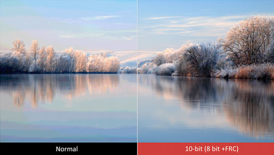
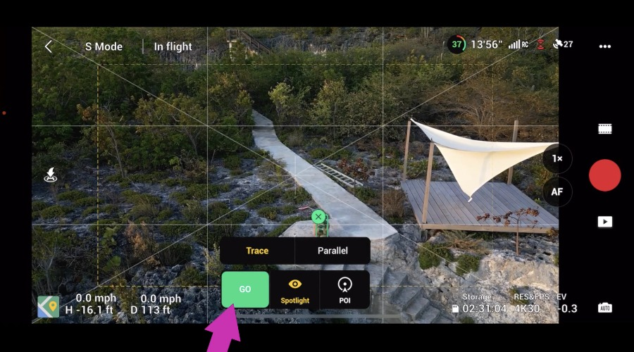
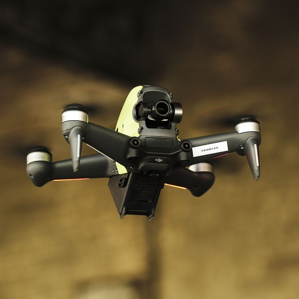
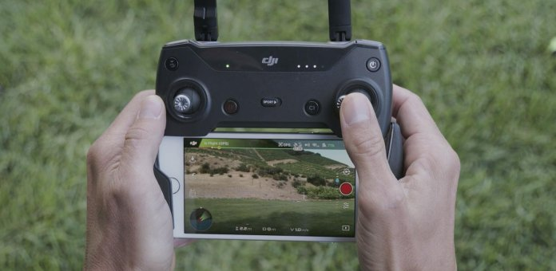

10 Bit Video
In the context of modern video technology, 10-bit video represents a significant advancement in video quality and color depth. Standard video is often recorded and displayed in 8-bit color, which provides 256 shades per color channel (red, green, and blue), resulting in around 16.7 million possible colors. In contrast, 10-bit video expands each channel to support 1,024 shades, enabling over 1 billion distinct colors. This dramatic increase in color depth allows for smoother gradients, more accurate color reproduction, and better overall visual fidelity.
For technology applications, especially in high-quality displays, video production, and broadcast technology, 10-bit video has become increasingly valuable. It reduces issues like "banding," which occurs when color transitions are less smooth and more noticeable. Additionally, the broader color range is beneficial in environments where high dynamic range (HDR) content is used, as it better preserves detail in both dark and bright scenes. This is especially critical in industries like cinematography, gaming, and drone footage, where lifelike color representation enhances the viewing experience.
Auto track
Auto Track is an advanced feature designed to enhance the functionality of our drones by allowing them to automatically follow and maintain focus on a designated subject. Leveraging sophisticated tracking algorithms and high-precision sensors, our Auto Track system enables seamless, hands-free operation, making our drones ideal for a range of applications such as surveillance, inspections, filming, and more.
With our Auto Track technology, the drone can intelligently recognize and lock onto a target, ensuring smooth, stable footage without requiring manual control. This feature is particularly valuable in dynamic environments where continuous manual adjustments are challenging. For instance, during aerial surveillance or action filming, the Auto Track system can maintain a steady, centered focus on the subject, even if it moves unpredictably.
Cryonics' Auto Track utilizes GPS, object recognition, and AI-driven predictive modeling to deliver highly accurate tracking. This means our drones can adjust their flight paths to follow the subject smoothly and responsively, maintaining optimal distance and avoiding obstacles along the way. Whether for professional video production, security, or industrial inspections, Cryonics' Auto Track technology elevates the efficiency and quality of our drones, making them a powerful tool for real-time, autonomous tracking.


Extended Flight Time
Cryonics Drone Manufacturer's Extended Flight Time technology represents a breakthrough in maximizing the operational efficiency and endurance of our drones. Our drones are engineered with advanced battery optimization, lightweight materials, and power-efficient designs, allowing them to stay airborne significantly longer than standard models. This extended flight time is crucial for applications requiring prolonged aerial operation, such as environmental monitoring, agricultural surveying, infrastructure inspection, and real-time surveillance.
The core of our extended flight capability lies in high-density, lithium-polymer (LiPo) batteries that deliver substantial energy without adding unnecessary weight. Additionally, our power management system intelligently monitors and adjusts power usage, optimizing energy distribution to prolong flight duration. To further enhance efficiency, Cryonics drones incorporate aerodynamic designs that reduce drag, along with high-efficiency motors to minimize power consumption during flight.
With extended flight time, our drones provide users with more uninterrupted air time, reducing the need for frequent battery changes or recharges. This translates to fewer operational interruptions and higher productivity, particularly in demanding missions that cover large areas or require constant monitoring. Cryonics' commitment to extended flight time ensures that our drones remain versatile, reliable, and efficient tools for a broad range of professional and industrial applications.
AI Pilot
Cryonics Drone Manufacturer's **AI Pilot** technology is an intelligent flight system designed to provide autonomous navigation, enhanced safety, and precise control for our drones. Powered by advanced machine learning algorithms and real-time data processing, the AI Pilot allows Cryonics drones to make dynamic flight decisions independently, adapting to environmental changes and potential obstacles. This capability enables our drones to operate effectively in complex, unpredictable environments, reducing the need for constant manual intervention.
Our AI Pilot technology integrates computer vision, sensor fusion, and predictive modeling to ensure smooth and safe flights. By interpreting data from various sensors, including LiDAR, GPS, and cameras, the AI Pilot can detect obstacles in real time, predict their movements, and dynamically adjust the drone’s flight path to avoid collisions. This is particularly valuable in applications like search and rescue, security, or industrial inspections, where obstacles are common, and precision is critical.
In addition to obstacle avoidance, AI Pilot allows our drones to perform complex maneuvers autonomously, such as auto take-off and landing, waypoint navigation, and auto-tracking of moving targets. It can also maintain stable flight in challenging weather conditions by adjusting its parameters based on real-time feedback. This level of autonomy not only enhances safety but also frees up operators to focus on data collection and analysis rather than manual piloting.
Cryonics' AI Pilot technology provides a reliable, intelligent solution for autonomous flight, making our drones ideal for both professional and industrial applications where accuracy, safety, and efficiency are essential.

Long distance Controller
Cryonics Drone Manufacturer’s **Long-Distance Controller** technology is engineered to provide seamless, extended-range control of our drones, enabling reliable operations over vast distances. With this feature, operators can maintain full command of their drones from far distances, crucial for applications such as remote inspections, large-area surveillance, and agricultural monitoring.
Our Long-Distance Controller leverages advanced radio frequency (RF) and signal amplification technology to achieve stable communication links across long ranges. This ensures minimal signal loss and enables real-time control and video transmission, even in challenging environments. To further extend connectivity, Cryonics drones integrate multi-band transmission, allowing them to switch frequencies as needed to avoid interference and maintain optimal performance.
Cryonics' Long-Distance Controller also includes intelligent failsafe protocols. If the connection is interrupted due to obstacles or signal blockage, our system enables the drone to automatically return to its takeoff location (Return-to-Home function), ensuring that no drone is left stranded or lost. This reliable long-range capability allows our drones to operate efficiently over large expanses, giving users the freedom to complete complex missions without needing to follow the drone physically or rely on nearby signal boosters.
With the Long-Distance Controller technology, Cryonics drones can perform confidently in demanding missions, providing greater flexibility, reliability, and operational reach for professionals and industrial users.